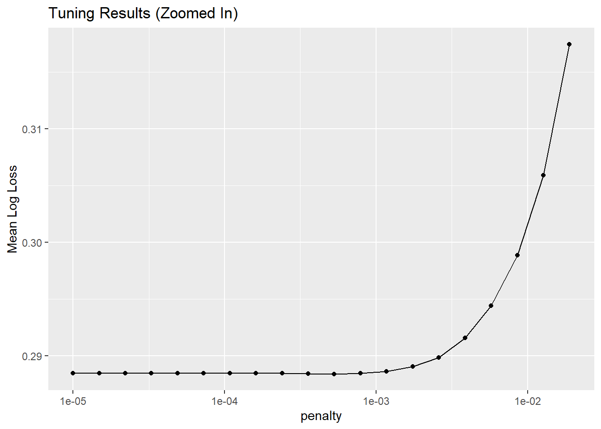
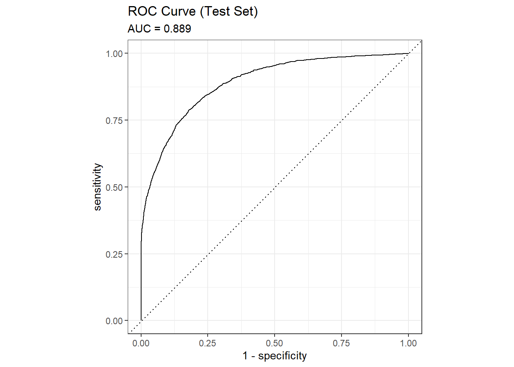
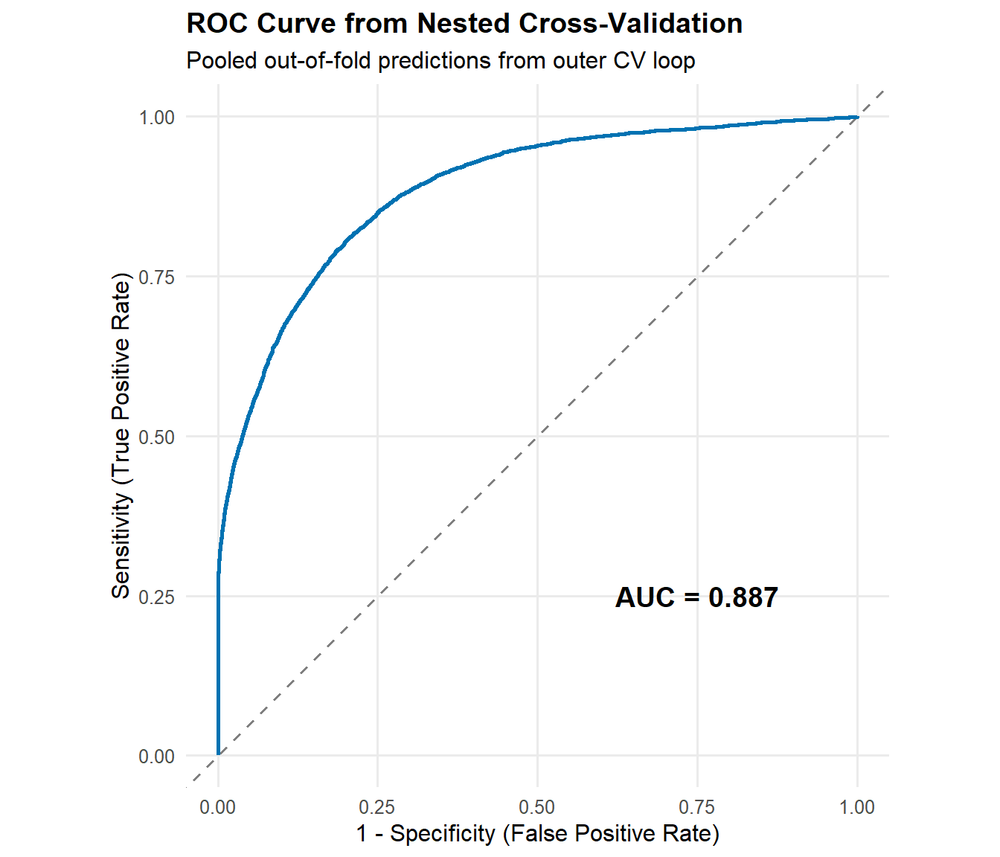

library(tidymodels)
library(dplyr)
#library(readr)
set.seed(2025)
PKGNAME <- "BigDataAndAI" # <--- CHANGE THIS to your package name
# Helper function to find if we are inside the package source tree
find_pkg_root <- function(path = getwd()) {
# Traverse up directories looking for a DESCRIPTION file
while (path != dirname(path)) {
if (file.exists(file.path(path, "DESCRIPTION"))) {
# Verify it is actually THIS package
desc <- tryCatch(read.dcf(file.path(path, "DESCRIPTION")), error = function(e) NULL)
if (!is.null(desc) && desc[1, "Package"] == PKGNAME) {
return(path)
}
}
path <- dirname(path)
}
return(NULL)
}
pkg_root <- find_pkg_root()
if (!is.null(pkg_root) && requireNamespace("devtools", quietly = TRUE)) {
# SCENARIO 1: We are developing (inside the source folder)
message(sprintf("Development mode: Loading %s from source via load_all()", PKGNAME))
devtools::load_all(pkg_root, export_all = FALSE) # export_all=FALSE behaves more like real library
} else if (requireNamespace(PKGNAME, quietly = TRUE)) {
# SCENARIO 2: Student mode (package is installed)
message(sprintf("Student mode: Loading installed %s library", PKGNAME))
library(PKGNAME, character.only = TRUE)
} else {
# SCENARIO 3: Disaster (Not installed, not in source)
stop(sprintf(
"The package '%s' is not installed. Please run: remotes::install_github('stenw/%s')",
PKGNAME, PKGNAME
))
}Practical 1: LASSO Logistic Regression in Epidemiology
Overfitting, tuning, and (nested) cross-validation
Learning objectives
After this practical, you should be able to:
- Explain why LASSO can reduce overfitting
- Understand the role of the tuning parameter (λ)
- Apply cross-validation for model tuning
- Explain why nested cross-validation is required for honest performance estimates
- Reflect on the instability of variable selection in epidemiological data
1. Setup
We use tidymodels to ensure a consistent modeling workflow.
Load the prepared NHANES dataset:
nhanes <- load_nhanes()2. Define outcome and predictors
We deliberately include a large set of predictors to make overfitting a real concern.
⚠️ We are not claiming these variables are causal predictors.
analysis_df <- nhanes %>%
select(
diabetes,
age, sex, race_eth, education, income_pir,
bmi,
waist_cm,
sleep_hours,
sbp = sbp_mean,
dbp = dbp_mean,
glucose_mmol,
LBXTC, LBDHDD, LBXTR,
LBXSCR, alt, ast,
smoking_status,
vitD, uric_acid,
alcohol,
pa_total_weekly, sedentary_min,
homa_ir,
SIAPROXY, SIAINTRP, DMDMARTL,
PHAFSTHR
) %>%
filter(!is.na(diabetes)) %>%
mutate(
# Convert to factor
diabetes = factor(diabetes, levels = c("1", "0")) # Force "1" to be first
)
missing_frac <- analysis_df %>%
summarise(across(
everything(),
~ mean(is.na(.))
)) %>%
pivot_longer(
everything(),
names_to = "variable",
values_to = "fraction_missing"
) %>%
arrange(desc(fraction_missing))
glimpse(analysis_df)Rows: 34,770
Columns: 29
$ diabetes <fct> 0, 1, 0, 0, 1, 1, 0, 0, 0, 0, 0, 0, 0, 0, 0, 1, 0, 1, …
$ age <dbl> 62, 71, 52, 21, 64, 66, 30, 61, 27, 40, 66, 72, 77, 40…
$ sex <fct> Female, Male, Male, Male, Male, Male, Female, Female, …
$ race_eth <fct> Other race, Non-Hispanic White, Mexican American, Non-…
$ education <fct> High school, High school, <9th grade, High school, 9–1…
$ income_pir <dbl> 1.83, 1.50, 2.20, 1.63, 4.01, 1.14, 1.01, 1.75, 5.00, …
$ bmi <dbl> 58.04, 30.05, 27.56, 23.34, 33.64, 44.06, 25.99, 31.21…
$ waist_cm <dbl> 156.3, 109.5, 95.4, 79.5, 117.0, 145.6, 89.7, 97.0, 82…
$ sleep_hours <dbl> 6, 8, 6, 6, 8, 5, 5, 5, 8, 6, 7, 7, 7, 5, 7, 9, 6, 7, …
$ sbp <dbl> 123.3333, 144.6667, 108.6667, 109.3333, 116.0000, 109.…
$ dbp <dbl> 60.66667, 52.66667, 67.33333, 64.00000, 76.66667, 61.3…
$ glucose_mmol <dbl> NA, NA, 6.273, NA, NA, NA, 5.384, 6.828, 5.995, 5.495,…
$ LBXTC <dbl> 179, 191, 188, NA, 158, 142, 188, 194, 167, 188, 225, …
$ LBDHDD <dbl> 47, 34, 47, NA, 43, 36, 35, 37, 37, 62, 90, 76, 73, 47…
$ LBXTR <dbl> NA, NA, 99, NA, NA, NA, 172, 233, 124, 101, NA, 61, NA…
$ LBXSCR <dbl> 0.52, 0.76, 0.72, NA, 0.70, 1.36, 0.52, 0.62, 0.92, 0.…
$ alt <dbl> 26, 20, 28, NA, 42, 19, 15, 51, 24, 18, 12, 26, 18, 37…
$ ast <dbl> 24, 20, 22, NA, 35, 23, 17, 40, 25, 19, 18, 22, 33, 33…
$ smoking_status <fct> Never, Former, Never, Never, Former, Never, Never, Nev…
$ vitD <dbl> 58.80, 81.80, 78.40, NA, 61.90, 53.30, 39.10, 51.10, 4…
$ uric_acid <dbl> 6.5, 4.0, 4.8, NA, 6.7, 8.3, 3.2, 5.3, 6.6, 5.3, 4.5, …
$ alcohol <fct> No, No, Yes, Yes, Yes, No, No, No, Yes, Yes, Yes, Yes,…
$ pa_total_weekly <dbl> 0, 0, 1500, 2170, 90, 0, 1950, 0, 495, 0, 0, 150, 70, …
$ sedentary_min <dbl> 720, 240, 180, 300, 180, 60, 120, 480, 600, 480, 60, 1…
$ homa_ir <dbl> NA, NA, 16.058880, NA, NA, NA, 12.261163, 38.546336, 1…
$ SIAPROXY <fct> No, No, No, No, No, No, No, No, No, No, No, No, No, No…
$ SIAINTRP <fct> No, No, No, No, No, No, No, No, No, No, No, No, No, No…
$ DMDMARTL <fct> Married, Married, Married, Never married, Married, Mar…
$ PHAFSTHR <dbl> NA, NA, 14, 12, NA, NA, 9, 12, 9, 13, NA, 13, NA, 11, …Think:
Why might a standard logistic regression struggle with this many correlated predictors?
## 3. Preprocessing recipe
Key ideas: - LASSO is scale-dependent - Dummy variables increase dimensionality - Preprocessing must be inside resampling
lasso_recipe <- recipe(diabetes ~ ., data = analysis_df) %>%
step_indicate_na(all_predictors()) %>%
step_impute_median(all_numeric_predictors()) %>%
step_impute_mode(all_nominal_predictors()) %>%
step_zv(all_predictors()) |>
step_dummy(all_nominal_predictors(), one_hot = TRUE) %>%
step_normalize(all_numeric_predictors())
lasso_recipeIn inferential statistics we often use multiple imputation to handle missingness. In prediction models it is often skipped. One reason is that missingness is often a predictor in itself (informative missingness). Furthermore using missingness indicators makes it relatively simple to apply the model to new data with may itself contain missing data (although there are also other methods that can solve this). Lastly multiple imputation can be computationally intensive, especially with large datasets and complex models.
Question: - In step_dummy we use one_hot = TRUE. This makes indicator variables for all categories. Why is this no problem here? - Why is normalization essential for LASSO but not strictly necessary for ordinary logistic regression? What would happen when we normalize on the whole data set? - In a setting where we would have 1.000 observations would you use all these variables? What would happen to the standard errors.
4. LASSO model specification
We now defines a logistic regression model with a LASSO penalty using the tidymodels framework. The model is specified but not fitted yet—it acts as a blueprint for later estimation. penalty = tune() means the strength of the LASSO penalty (λ) will be chosen by cross-validation, not fixed in advance.
Larger values of λ lead to more shrinkage and fewer predictors in the model.
mixture = 1 specifies pure LASSO (L1 penalty), which performs automatic variable selection.
The engine (glmnet) is the software backend that actually fits the specified model using numerical algorithms. glmnet is a standard and efficient implementation (package) for penalized regression.
lasso_spec <- logistic_reg(
penalty = tune(), # λ
mixture = 1 # pure LASSO
) %>%
set_engine("glmnet")
lasso_specLogistic Regression Model Specification (classification)
Main Arguments:
penalty = tune()
mixture = 1
Computational engine: glmnet 5. Train/test split (why this is not enough)
We spit the data in train and test sets. The test set is held out for final evaluation only.
set.seed(2025)
split <- initial_split(analysis_df, prop = 0.75)
train_data <- training(split)
test_data <- testing(split)Examine the resulting objects and the documentation of the initial_split() function to understand how the data is divided.
Discussion:
What goes wrong if we use the test set to choose λ?
6. Cross-validation for tuning λ
Inner cross-validation
set.seed(2025)
cv_inner <- vfold_cv(train_data, v = 5)Workflow
Now we create a workflow object. a workflow is an object that combines data preprocessing (via a formula or recipe) with a model specification (and optionally a resampling or tuning context) into a single, reproducible unit. This ensures that all preprocessing steps are learned only from the training data and are applied consistently during fitting, resampling, and prediction. By bundling these steps together, workflows prevent common mistakes such as data leakage and make model development easier to reproduce and maintain.
lasso_wf <- workflow() %>%
add_recipe(lasso_recipe) %>%
add_model(lasso_spec)
lasso_wf══ Workflow ════════════════════════════════════════════════════════════════════
Preprocessor: Recipe
Model: logistic_reg()
── Preprocessor ────────────────────────────────────────────────────────────────
6 Recipe Steps
• step_indicate_na()
• step_impute_median()
• step_impute_mode()
• step_zv()
• step_dummy()
• step_normalize()
── Model ───────────────────────────────────────────────────────────────────────
Logistic Regression Model Specification (classification)
Main Arguments:
penalty = tune()
mixture = 1
Computational engine: glmnet Tuning grid
lambda_grid <- grid_regular(
penalty(range = c(-5, 0)), # 10^-5 to 1
levels = 30
)7. Tune the model
Let’s look at the performance of the model for various values of lambda.
lasso_tuned <- tune_grid(
lasso_wf,
resamples = cv_inner,
grid = lambda_grid,
metrics = metric_set(roc_auc, mn_log_loss, brier_class)
)
lasso_tuned %>%
collect_metrics() %>%
filter(penalty < 0.025) %>% # Filter out the "bad" models manually
filter(.metric == "mn_log_loss") %>% # Focus on just one metric if you want
ggplot(aes(x = penalty, y = mean)) +
geom_line() +
geom_point() +
scale_x_log10() +
labs(y = "Mean Log Loss", title = "Tuning Results (Zoomed In)")
autoplot(lasso_tuned)
Observation:
Is there a single clearly optimal value of λ?
8. Finalize and evaluate
We select the value of lambda that optimized the log-loss metric during tuning. “Finalizing” the workflow means updating it with this specific parameter value so it is no longer tunable. We then fit this finalized model to the entire training dataset and, finally, evaluate its performance on the held-out test set.
best_lambda <- select_best(lasso_tuned, metric="mn_log_loss")
final_lasso <- finalize_workflow(
lasso_wf,
best_lambda
)
final_fit <- fit(final_lasso, train_data)test_pred <- predict(final_fit, test_data, type = "prob") %>%
bind_cols(test_data)
auc <- roc_auc(test_pred, truth = diabetes, .pred_1)test_pred %>%
roc_curve(truth = diabetes, .pred_1) %>%
autoplot() +
labs(title = "ROC Curve (Test Set)",
subtitle = paste0("AUC = ", round(auc$.estimate, 3))) 
test_pred %>%
mutate(prob_bin = ntile(.pred_1, 10)) %>% # Split into 10 bins
group_by(prob_bin) %>%
summarise(
mean_pred = mean(.pred_1),
# Convert factor "1"/"0" to numeric 1/0.
# If "1" is the first level, as.integer gives 1.
mean_obs = mean(diabetes == "1"),
n = n()
) %>%
ggplot(aes(x = mean_pred, y = mean_obs)) +
geom_point() +
geom_line() +
geom_abline(slope = 1, intercept = 0, linetype = "dashed", color = "gray") +
labs(
title = "Calibration Curve",
x = "Predicted Probability",
y = "Observed Proportion",
caption = "Dashed line = Perfect Calibration"
)
9. Nested cross-validation
While the train/test split gives us an unbiased estimate, it effectively reduces our sample size. As an alternative we can used an other layer of cross-validation.
- Inner CV: for tuning hyperparameters (in our case lambda)
- Outer CV: for performance estimation
Implementation
set.seed(2025)
cv_outer <- vfold_cv(analysis_df, v = 5)nested_results <- cv_outer %>%
mutate(
inner_cv = map(splits, ~ vfold_cv(analysis(.x), v = 5)),
tuned = map(inner_cv, ~
tune_grid(
lasso_wf,
resamples = .x,
grid = lambda_grid,
metrics = metric_set(roc_auc, mn_log_loss, brier_class)
)
),
best = map(tuned, select_best, metric="mn_log_loss"),
final_wf = map(best, \(x) finalize_workflow(lasso_wf, x)),
fitted = map2(final_wf, splits, \(x, y) fit(x, analysis(y))),
assessed = map2(
fitted, splits,
~ predict(.x, assessment(.y), type = "prob") %>%
bind_cols(assessment(.y))
),
auc = map_dbl(
assessed,
\(x) roc_auc(x, truth = diabetes, .pred_1)$.estimate
)
)nested_results$auc[1] 0.8967918 0.8823333 0.8820758 0.8853266 0.8861592mean(nested_results$auc)[1] 0.8865373Overall ROC Curve
To construct an overall ROC curve, we pool the predictions from all outer test folds. Since each observation appears in exactly one outer test fold, these are all truly held-out predictions.
# Combine all out-of-fold predictions
pooled_predictions <- nested_results %>%
select(id, assessed) %>%
unnest(assessed)# Calculate ROC curve from pooled predictions
roc_curve_data <- pooled_predictions %>%
roc_curve(truth = diabetes, .pred_1)
# Calculate overall AUC
overall_auc <- pooled_predictions %>%
roc_auc(truth = diabetes, .pred_1)
# Plot ROC curve
roc_plot <- ggplot(roc_curve_data, aes(x = 1 - specificity, y = sensitivity)) +
# Reference line (random classifier)
geom_abline(slope = 1, intercept = 0, linetype = "dashed", color = "gray50") +
# ROC curve
geom_path(linewidth = 1, color = "#0072B2") +
# Add AUC value as annotation
annotate(
"text",
x = 0.75, y = 0.25,
label = paste0("AUC = ", round(overall_auc$.estimate, 3)),
size = 5, fontface = "bold"
) +
# Labels and theme
labs(
title = "ROC Curve from Nested Cross-Validation",
subtitle = "Pooled out-of-fold predictions from outer CV loop",
x = "1 - Specificity (False Positive Rate)",
y = "Sensitivity (True Positive Rate)"
) +
coord_equal() +
theme_minimal(base_size = 12) +
theme(
plot.title = element_text(face = "bold"),
panel.grid.minor = element_blank()
)
roc_plot
Note that here we calculate the AUC a little bit different than before. Before we used macro averaging where we calculate the AUC for each fold and then average them. Here we use micro averaging where we pool all predictions and calculate a single AUC. There can be small differences between the two methods especially for measures like the AUC which are not calculated by averaging over individual predictions but rather by ranking them.
Bootstrap of optimism
Note that there are also other ways to properly evaluate the model performance, for example we can create bootstap samples from the training data, fit the model on each bootstrap sample, and evaluate its performance on the training data as well as on the out-of-bag observations (those not included in the bootstrap sample). This gives us an estimate of the model optimism which we can use to correct the apparent performance on the training data. This method is often preferred, especially in smaller data sets but is a bit more complicated.
10. Variable selection instability
We use extract_fit_parsnip to extract the model fit from each outer fold, then tidy to get the coefficients. We filter out the intercept and zero estimates, then pull the variable names. Finally, we tabulate how often each variable was selected across the outer folds.
extract_vars <- function(fit) {
tidy(extract_fit_parsnip(fit)) %>%
filter(term != "(Intercept)", estimate != 0) %>%
pull(term)
}
selected_vars <- nested_results$fitted %>%
map(extract_vars)
sort(table(unlist(selected_vars)), decreasing = TRUE)
age alcohol_No
5 5
alcohol_Yes alt
5 5
ast bmi
5 5
dbp DMDMARTL_Living.with.partner
5 5
DMDMARTL_Never.married DMDMARTL_Separated
5 5
DMDMARTL_Widowed education_College.graduate
5 5
education_X.9th.grade education_X9.11th.grade
5 5
glucose_mmol homa_ir
5 5
income_pir LBDHDD
5 5
LBXSCR LBXTC
5 5
na_ind_dbp na_ind_glucose_mmol
5 5
na_ind_homa_ir na_ind_income_pir
5 5
na_ind_LBXTR na_ind_pa_total_weekly
5 5
na_ind_sbp na_ind_sedentary_min
5 5
na_ind_vitD na_ind_waist_cm
5 5
pa_total_weekly race_eth_Non.Hispanic.Black
5 5
race_eth_Non.Hispanic.White race_eth_Other.Hispanic
5 5
race_eth_Other.race sbp
5 5
sedentary_min sex_Female
5 5
sex_Male SIAPROXY_No
5 5
SIAPROXY_Yes uric_acid
5 5
vitD waist_cm
5 5
LBXTR na_ind_education
4 4
na_ind_LBXSCR na_ind_PHAFSTHR
4 4
na_ind_smoking_status SIAINTRP_No
4 4
SIAINTRP_Yes smoking_status_Never
4 4
DMDMARTL_Divorced na_ind_alcohol
3 3
na_ind_bmi na_ind_DMDMARTL
3 3
na_ind_LBDHDD na_ind_LBXTC
3 3
PHAFSTHR smoking_status_Former
3 3
DMDMARTL_Married education_High.school
2 2
na_ind_sleep_hours na_ind_uric_acid
2 2
sleep_hours education_Some.college
2 1 Reflection questions:
- Why are some predictors selected inconsistently?
- What does this imply for etiological interpretation?
- How might this affect scientific conclusions?
11. Summary
- LASSO reduces variance but does not eliminate overfitting
- Tuning must be done via cross-validation
- Performance estimation can be done in an independent test set or ideally by nested cross validation.
- Variable selection is not causal inference
In the next practical, we will compare LASSO with tree-based boosting models using the same dataset and evaluation strategy.
Question:
Change the mixture parameter to 0. What kind of model does this correspond to?